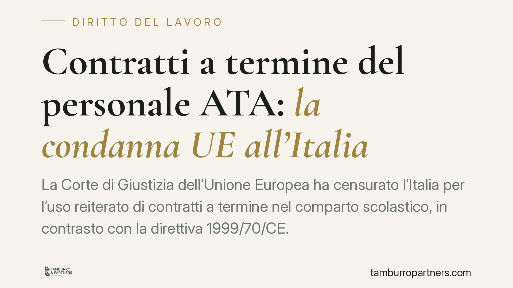

Contratti a termine del personale ATA: la condanna UE all'Italia
La Corte di Giustizia dell'Unione Europea ha censurato l'Italia per l'uso reiterato di contratti a termine nel comparto scolastico, in contrasto con la direttiva 1999/70/CE. La pronuncia incide sul personale ATA e impone correttivi normativi su prevenzione del precariato e requisiti dei concorsi di stabilizzazione. Vediamo perché la decisione conta e cosa può fare oggi chi è coinvolto.

Il fatto
La Corte di Giustizia dell'Unione Europea è tornata sul nodo dei rapporti a tempo determinato nella scuola pubblica italiana. Nel mirino, questa volta, il personale ATA: amministrativo, tecnico e ausiliario. Sono le figure che assicurano il funzionamento materiale e organizzativo degli istituti, spesso impiegate per anni con una successione di contratti a termine senza prospettiva stabile.
Il giudice europeo ha ritenuto che il sistema italiano non offra strumenti adeguati a prevenire e sanzionare l'abuso nel ricorso ai contratti a tempo determinato. Da qui la richiesta di interventi sulla disciplina interna, comprese le regole di accesso ai concorsi di stabilizzazione.
Inquadramento normativo
Il parametro di riferimento è la direttiva 1999/70/CE, che recepisce l'accordo quadro europeo sul lavoro a tempo determinato. La clausola 5 dell'accordo obbliga gli Stati membri ad adottare almeno una di queste misure: ragioni oggettive che giustifichino il rinnovo, un tetto alla durata complessiva dei contratti successivi, oppure un limite al numero dei rinnovi.
La direttiva mira a evitare l'"abuso": l'uso strutturale del contratto a termine per coprire esigenze in realtà stabili e durevoli. Quando un'amministrazione impiega lo stesso lavoratore per anni rinnovando il rapporto, il contratto a termine smette di essere uno strumento per fronteggiare un bisogno temporaneo e diventa un modo per sottrarsi alle tutele del rapporto a tempo indeterminato.
La Corte ha già più volte affermato che, nel settore pubblico italiano, la sola conversione del rapporto non è praticabile per il principio del concorso (art. 97 della Costituzione). Resta però l'obbligo di garantire una sanzione effettiva, proporzionata e dissuasiva: in genere, il risarcimento del danno. La pronuncia in esame sollecita l'Italia a rendere queste tutele realmente operative anche per il personale ATA.
Implicazioni pratiche
Per il lavoratore ATA che ha sommato più contratti a termine, la decisione rafforza due tipi di pretesa.
La prima è risarcitoria: chi ha subìto un utilizzo abusivo dei contratti a termine può agire per il ristoro del danno, secondo i criteri elaborati dalla giurisprudenza nazionale ed europea.
La seconda riguarda i percorsi di stabilizzazione: la sentenza incide sui requisiti dei concorsi riservati, perché le condizioni di accesso non devono di fatto vanificare il diritto a una misura efficace contro il precariato.
Per le amministrazioni scolastiche, la pronuncia segnala un rischio di contenzioso seriale e l'esigenza di rivedere prassi di reclutamento e di rinnovo dei rapporti.
Va ricordato che ogni posizione è legata alla durata effettiva del servizio, al numero di contratti, alle mansioni e alla documentazione disponibile. Una pronuncia favorevole in sede europea non si traduce automaticamente in un risultato individuale: occorre verificare i presupposti caso per caso.
Cosa fare in concreto
- Ricostruisci la tua storia contrattuale: raccogli tutti i contratti a termine, le proroghe, i certificati di servizio e i prospetti retributivi.
- Verifica la durata complessiva del rapporto e il numero di rinnovi succedutisi nel tempo, perché sono gli elementi su cui si misura l'abuso.
- Controlla i termini di prescrizione e di decadenza per l'azione risarcitoria: agire tardi può precludere la tutela.
- Monitora bandi e requisiti dei concorsi di stabilizzazione, segnalando eventuali clausole che escludono ingiustificatamente il servizio prestato.
- Richiedi una valutazione preliminare della posizione prima di avviare qualsiasi iniziativa, per stimare fondatezza e tempi.
Consigliamo di non affidarsi a soluzioni standardizzate: il diritto del lavoro nel pubblico impiego scolastico è un terreno tecnico, dove la differenza la fa la qualità della ricostruzione documentale.
Disclaimer
Contributo informativo a cura di Tamburro & Partners - Avv. Giuseppe Tamburro. Non costituisce parere legale.
Ogni storia di lavoro ha i suoi tempi.
Se gestisci HR e vuoi un confronto su contenzioso, ispezioni o licenziamenti, scrivi allo studio. Ti rispondiamo entro un giorno lavorativo.